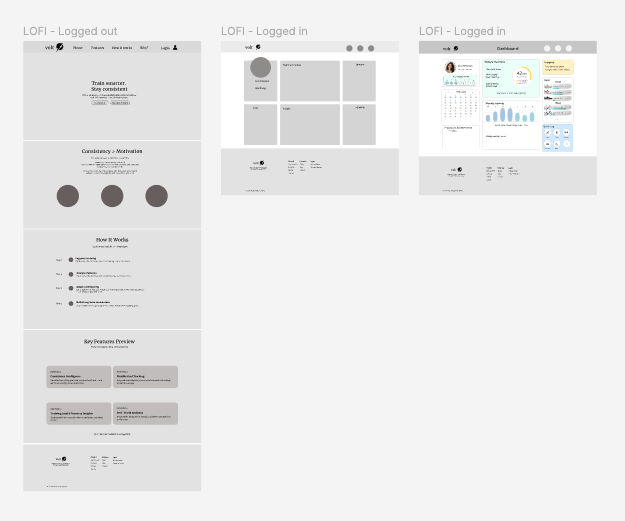
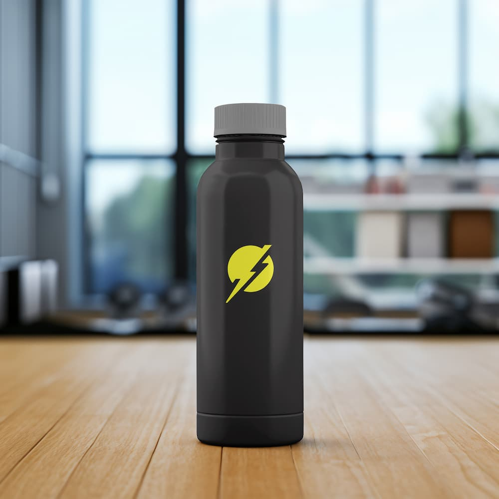
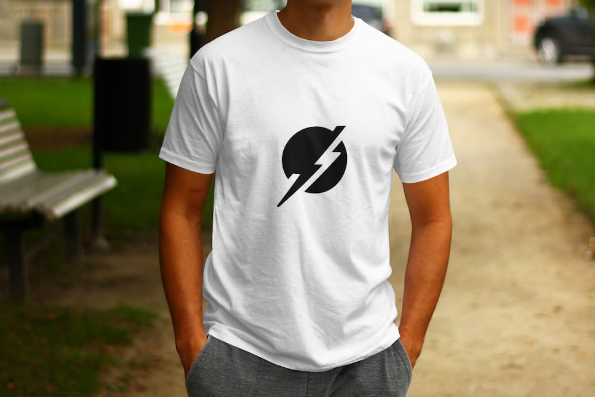
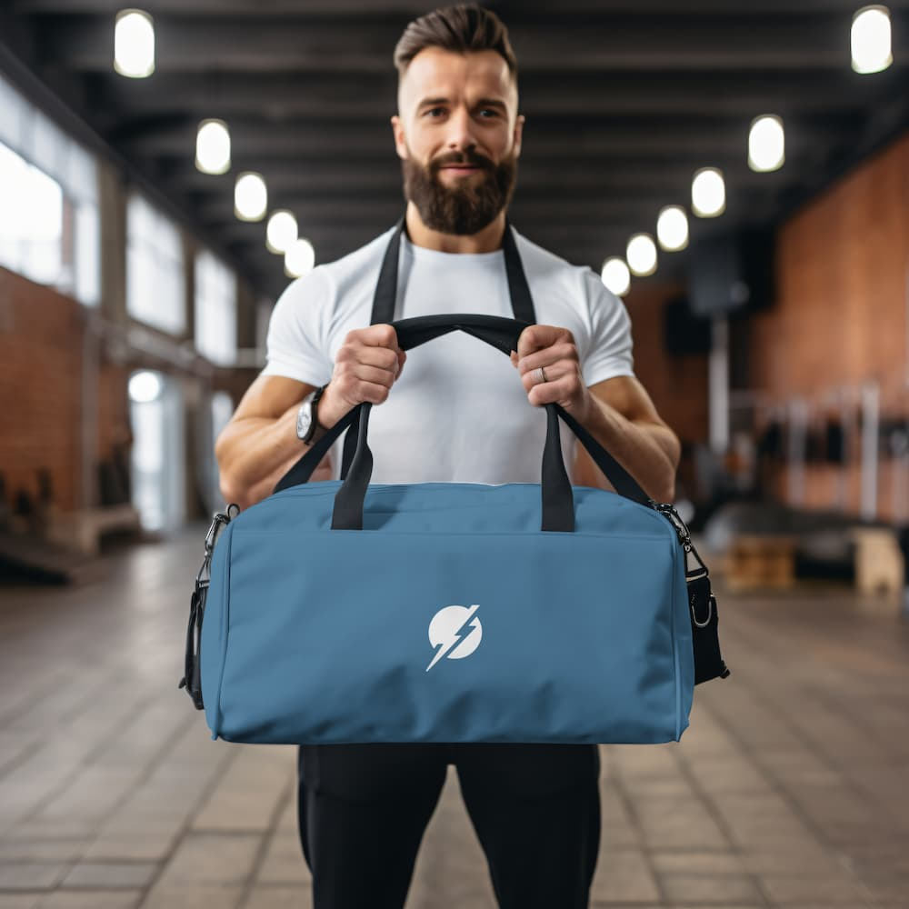

Most fitness apps overload users with data, which can feel more stressful than helpful. The challenge was to design an experience that keeps things simple—supporting consistency, recovery, and long-term progress without making users overthink it.
The Challenge
I designed a structured dashboard that translates activity data into clear, actionable insights. The system highlights key moments—daily progress, weekly patterns, and recovery signals—allowing users to understand their performance at a glance.
The Solution
My Approach
Designing for Real-Life Consistency
I focused on creating a system that supports changing routines instead of expecting perfect ones. The experience is designed to help users stay on track, even when their schedule shifts.

Making Data Feel Clear
Fitness data can get overwhelming fast, so I simplified it into more readable layouts and key insights. The goal was to make progress feel easy to understand, not intimidating.
Supporting Recovery and Progress
The experience goes beyond activity tracking by also highlighting recovery. This helps users better understand when to push forward, when to rest, and how to build a rhythm that feels sustainable.




Final Thoughts
A simpler approach to fitness tracking—focused on clarity, recovery, and staying consistent over time.
×